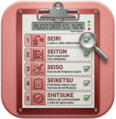

5S
ALMOXARIFADO

Almoxarifado · Diagnóstico de baseline · Auditoria física · Dashboard de equipe
Como o colaborador enxerga o estado atual. Escala 1 a 4 por questão.
Verificação de evidências no local. Escala 0 a 5 — tem placa? Chão marcado? POP afixado?
Médias · Dispersão · Comparação
Formulário p/ resposta em papel
Termos e conceitos 5S
Selecione o tipo de formulário para gerar a versão imprimível
Formulário com escala 1–4, campo de observação por questão e tabela de resultado.
Formulário com escala 0–5, evidência esperada por item, tabela de pontuação e plano de ação.